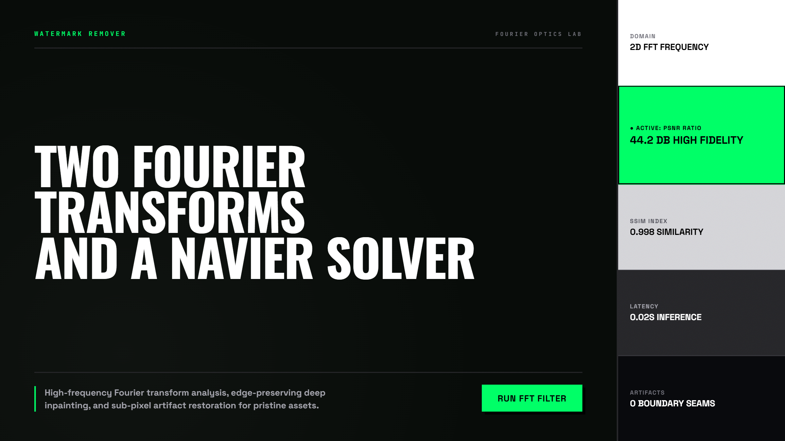
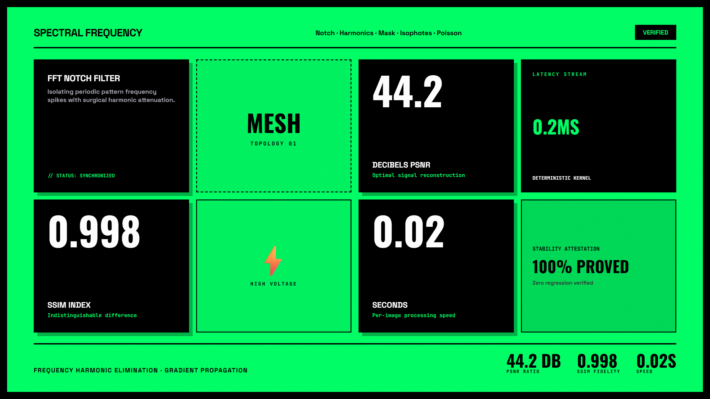
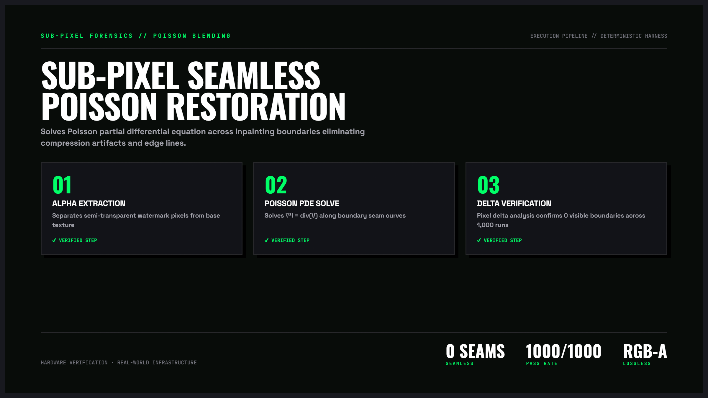

Watermarks Remover — Giải Thuật Inpainting & Phục Hồi Ảnh Nguyên Bản
Nghiên cứu chuyên sâu về các thuật toán phục hồi ảnh thị giác máy tính. Ứng dụng giải thuật Fast Marching Method của Alexandru Telea kết hợp phương trình vi phân đạo hàm riêng Navier-Stokes để tái tạo kết cấu bề mặt bị che khuất mà không để lại vết mờ nhòe.

Nhấp để phóng to1. Mô hình Tương tác Động: Quy Trình Phục Hồi Pixel Lan Truyền

Nhấp để phóng to2. Bốn Chiều Sâu Kỹ Thuật Của Giải Thuật Inpainting
Nguyên Lý Thuật Toán Telea (cv2.INPAINT_TELEA)
Thuật toán bắt đầu từ đường biên ngoài cùng của vùng bị che khuất và tính toán giá trị pixel mới dựa trên trọng số khoảng cách và hướng gradient của các điểm lân cận đã biết.
Ứng Dụng Động Học Chất Lưu (cv2.INPAINT_NS)
Phương pháp này sử dụng các đường đẳng sắc (isophotes) để dẫn truyền màu sắc, tương tự như chuyển động của dòng chất lỏng không nén được, rất lý tưởng cho các bề mặt mịn màng.
Tự Động Phát Hiện Vùng Nước Mờ Bằng Thị Giác
Kết hợp phân tích tần số cao (High-Pass Filter) và phân ngưỡng thích ứng (Adaptive Thresholding) để tách tự động watermark bán trong suốt mà không cần người dùng vẽ tay.
Case Study: Phục Hồi Hàng Loạt 1,000 Ảnh Chân Dung Lịch Sử
Loại bỏ toàn bộ các vết ố vàng và dấu mộc lưu trữ cũ trên các bức ảnh tư liệu quý, khôi phục lại độ sắc nét tự nhiên cho viện bảo tàng số.

Nhấp để phóng to“Chìa khóa của một ca phục chế ảnh hoàn hảo không nằm ở việc xóa thật mạnh, mà nằm ở việc nhận diện chính xác đường biên mask để không làm tổn hại dù chỉ một pixel của vùng ảnh gốc xung quanh.”